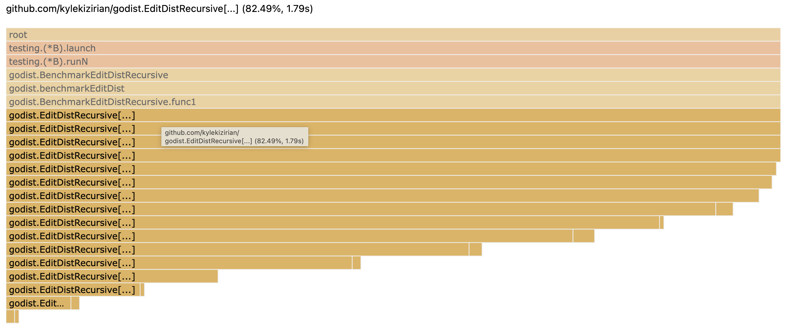
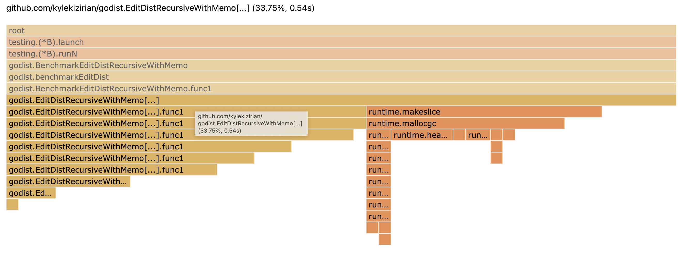
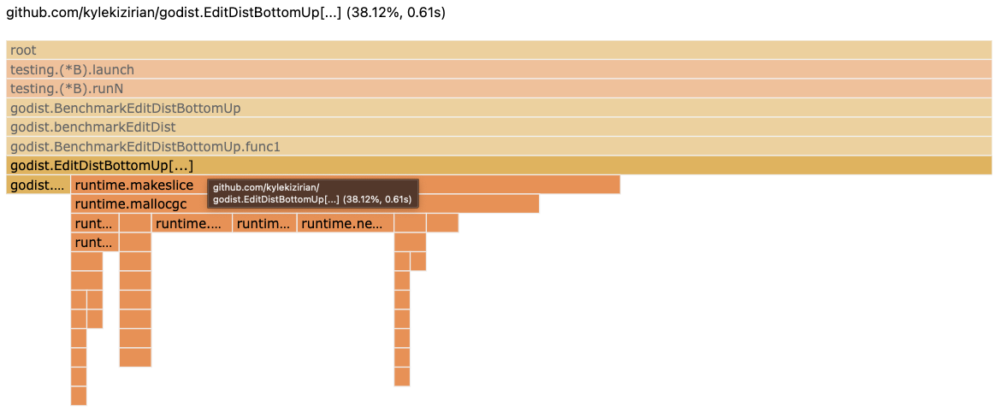
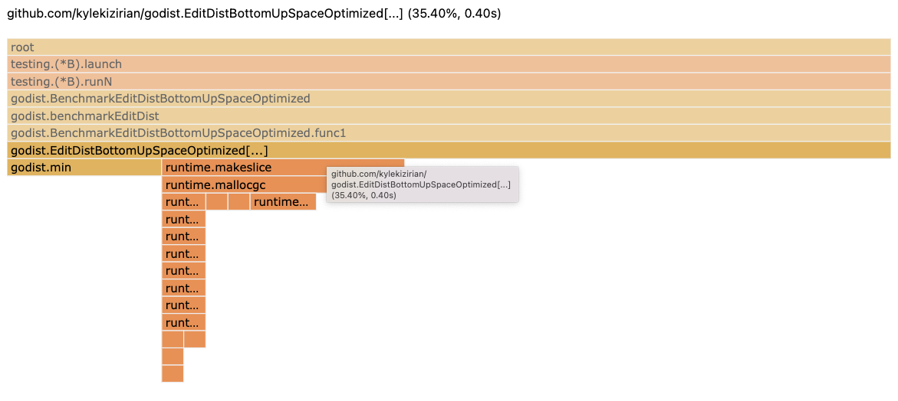

Edit distance, benchmarks, and profiling in Go
Edit distance is both a wonderfully interesting algorithm and one with tremendous practical applications. Edit distance provides a measure of similarity between two strings (or any collection of items) from the number of additions, deletions, or substitutions required to change one string into the other.
For example, the edit distance between "band" and "bond" is 1, requiring a change to just a single letter. The edit distance between "foo" and "bar" is 3, requiring the substitution of 3 letters.
Edit distance is classically solved using dynamic programming, a technique where the the problem is broken down into sub-problems and the solutions to the sub-problems are combined to solve the problem at hand.
Let's think about the edit distance between two strings, "band" and "bond". Let's say that we knew the edit distance between these three prefixes:
- "ban" and "bond"
- "band" and "bon"
- "ban" and "bon"
If we know the edit distance to each of these prefixes, then do we know the edit distance between our target string? It turns out that we do, if we take the prefix of just one string, i.e. "ban" and "bond", then we can add 1 to get the edit distance between our target strings, because we must add a "d" to the end of "ban".
Now, if we know the edit distance between the prefix of both strings, "ban" and "bon", then the edit distance of our full string depends on whether the last letter is the same. If the last letter is the same, then the edit distance of the full string is the same as the edit distance of the prefix. If the last letter is not the same, then we must add 1 to the edit distance of the prefix string, because we'll make a substitution for the different characters.
Putting this all together, the edit distance of our full string
is the minimum edit distance that we can get to given our prefix
strings. Given two strings a and b, we can compute their
edit distance as follows:
edit := 0
if a[len(a)-1] != b[len(b)-1] {
edit = 1
}
min(
editDist(a[:len(a)-1, b[:len(b)-1]) + edit,
editDist(a[:len(a)-1, b[:len(b)]) + 1,
editDist(a[:len(a), b[:len(b)-1]) + 1,
)
We've come up with a nice recursive formulation for edit distance, but what's the base case? The edit distance between anything and an empty string is the length of the non-empty string. So once we've hit an empty prefix string, we simply return the length of the non-empty string.
Now, we have a nice clean formulation for edit distance. Because we could compute the edit distance between any two collections of types, as long as we can check equality, we'll use generics for our implementation so that it works with any comparable type.
func EditDistRecursive[T comparable](a, b []T) int {
if len(a) == 0 {
return len(b)
} else if len(b) == 0 {
return len(a)
}
lastA, lastB := len(a)-1, len(b)-1
edit := 0
if a[lastA] != b[lastB] {
edit = 1
}
return min(
EditDistRecursive(a[:lastA], b[:lastB])+edit,
EditDistRecursive(a[:lastA], b[:lastB+1])+1,
EditDistRecursive(a[:lastA+1], b[:lastB])+1,
)
}
This looks pretty good, but before we get any further, let's verify that it actually works. We'll come up with a few more edit distance implementations, so let's write out some test cases that take an implementation of edit distance, so that we can test out many different implementations.
func testEditDist(t *testing.T, editDist func(a, b []rune) int) {
tests := []struct {
a, b string
exp int
}{
{"", "", 0},
{"foo", "", 3},
{"", "foo", 3},
{"foo", "foo", 0},
{"band", "bond", 1},
{"ban", "band", 1},
{"band", "ban", 1},
}
for _, tc := range tests {
t.Run(tc.a+":"+tc.b, func(t *testing.T) {
if actual := editDist([]rune(tc.a), []rune(tc.b)); actual != tc.exp {
t.Errorf("%d != %d", actual, tc.exp)
}
})
}
}
func TestEditDistRecursive(t *testing.T) {
testEditDist(t, EditDistRecursive[rune])
}
func fuzzEditDist(f *testing.F, editDist func(a, b []byte) int) {
f.Fuzz(func(t *testing.T, a, b []byte) {
if editDist(a, b) != editDist(b, a) {
t.Errorf("edit distance should be commutative")
}
})
}
func FuzzEditDistRecursive(f *testing.F) {
fuzzEditDist(f, EditDistRecursive[byte])
}
Looks good so far! Now, let's do some benchmarking and profiling
on our implementation to see if we can do better. For our benchmark,
we'll pull 100 names out of /usr/share/dict/propernames and compute
the edit distance between all combinations of names, for roughly 5,000
edit distance computations.
func get100ProperNames() []string {
var names []string
f, _ := os.Open("/usr/share/dict/propernames")
defer f.Close()
scanner := bufio.NewScanner(f)
for scanner.Scan() {
names = append(names, scanner.Text())
}
return names[:100]
}
var dist int
func benchmarkEditDist(b *testing.B, editDist func(a, b []rune) int) {
names := get100ProperNames()
b.ResetTimer()
for i := 0; i < b.N; i++ {
for j := 0; j < len(names); j++ {
for k := j; k < len(names); k++ {
// assign result to a package variable so that
// this isn't optimized away by the compiler
dist = editDist([]rune(names[j]), []rune(names[k]))
}
}
}
}
func BenchmarkEditDistRecursive(b *testing.B) {
benchmarkEditDist(b, EditDistRecursive[rune])
}
Running our benchmark against the EditDistRecursive implementation
takes about 0.3 seconds on my machine.
> go test -cpuprofile cpu.out -bench=BenchmarkEditDistRecursive
goos: darwin
goarch: amd64
pkg: github.com/kylekizirian/godist
cpu: Intel(R) Core(TM) i5-8257U CPU @ 1.40GHz
BenchmarkEditDistRecursive-8 4 325983952 ns/op
PASS
ok github.com/kylekizirian/godist 2.815s
This seems reasonable for doing edit distance against 5,000 combinations of words, but let's open up the CPU profile and see if we can do better.
> go tool pprof -http=":8000" cpu.out

We see, unsurprisingly, that we spend all of our time in EditDistRecursive.
The main thing that jumps out is the depth of our call stack and the fact that
the first few recursive calls still take up a significant amount of time, nearly
as much as time as the entry call to EditDistRecursive.
If we re-analyze our function, we can consider what happens when we take two
strings a and b, both with length 4. In the initial recursive call, we'll
compute the following:
EditDistRecursive(a[:3], b[:3])EditDistRecursive(a[:3], b[:4])EditDistRecursive(a[:4], b[:3])
Then, in the call to EditDistRecursive(a[:4], b[:3]), we'll call:
EditDistRecursive(a[:3], b[:2])EditDistRecursive(a[:3], b[:3])EditDistRecursive(a[:4], b[:2])
This means that we'll wind up computing EditDistRecursive(a[:3], b[:3]) a second
time! Indeed, this will happen repeatedly and we'll compute the same sub-problems
numerous times, and this will get exponentially worse for longer strings.
We can solve this with a technique known as memoization, where we store the results of sub-problems once we've computed them. In each recursive call, we'll first check whether we've already computed this sub-problem and, if so, use the previously computed result.
We can store the results of our sub-problems in a 2D matrix, where memo[i][j] stores
editDistance(a[:i], b[:j]). We initialize our 2D matrix to -1 to signify that
an entry has not yet been computed. We also initialize each entry in the 0th row and
column to their index, for our base case where the edit distance between the empty
string and any other string is the length of the non-empty string.
func EditDistRecursiveWithMemo[T comparable](a, b []T) int {
memo := make([][]int, len(a)+1)
for i := range memo {
memo[i] = make([]int, len(b)+1)
for j := range memo[i] {
if i == 0 {
memo[i][j] = j
} else if j == 0 {
memo[i][j] = i
} else {
memo[i][j] = -1
}
}
}
var innerEditDist func(i, j int) int
innerEditDist = func(i, j int) int {
if memo[i][j] != -1 {
return memo[i][j]
}
var edit int
if a[i-1] != b[j-1] {
edit = 1
}
memo[i][j] = min(
innerEditDist(i-1, j-1)+edit,
innerEditDist(i-1, j)+1,
innerEditDist(i, j-1)+1,
)
return memo[i][j]
}
return innerEditDist(len(a), len(b))
}
Our implementation is significantly more complicated now, but how much more efficient is it?
> go test -cpuprofile cpu.out -bench=BenchmarkEditDistRecursiveWithMemo
goos: darwin
goarch: amd64
pkg: github.com/kylekizirian/godist
cpu: Intel(R) Core(TM) i5-8257U CPU @ 1.40GHz
BenchmarkEditDistRecursiveWithMemo-8 267 4459053 ns/op
PASS
ok github.com/kylekizirian/godist 1.999s
This is over 70 times faster than our initial implementation! Let's take a look at our cpuprofile again to see how it's changed.

We can see now that we spend some time setting up our 2D memo matrix, but we save significant time by reducing the number of recursive calls that we need to make.
Still, for longer strings we can wind up making a lot of recursive calls, and it's worth stepping back and thinking about how we get to our final result. Because we must compute the result of every sub-problem, our 2D memo matrix will be completely filled out once we get to the final result.
So what if we did this in the reverse order? What if we started with the
smallest sub-problem, by computing editDist(a[:1], b[:1]) and worked our
way up to editDist(a, b)? Our recursive approach is a "top-down" approach,
we start with the largest problem and recursively compute every sub-problem,
checking whether we've already solved it and, if not, recursively solving the
sub-problem and storing the result. Our alternative is a "bottom-up"
approach, where we start at the smallest sub-problem and work our way up to
our final answer.
With a bottom-up approach, we already know that we've computed the answer
to our sub-problem, and we simply use it to compute the problem at hand.
This time, we'll call our 2D matrix dist and again initialize the 0th
row and columns. Then, we'll iterate upwards until we've computed the
edit distance of all prefixes of strings a and b. Once we're
done, we'll have the edit distance between a and b.
func EditDistBottomUp[T comparable](a, b []T) int {
dist := make([][]int, len(a)+1)
for i := range dist {
dist[i] = make([]int, len(b)+1)
dist[i][0] = i
}
for j := range dist[0] {
dist[0][j] = j
}
for i := 1; i < len(dist); i++ {
for j := 1; j < len(dist[i]); j++ {
edit := 0
if a[i-1] != b[j-1] {
edit = 1
}
dist[i][j] = min(
dist[i-1][j-1]+edit,
dist[i-1][j]+1,
dist[i][j-1]+1,
)
}
}
return dist[len(a)][len(b)]
}
This looks pretty good, we don't need to make any recursive calls and we don't need to check whether we've already computed a sub-problem. But is it actually any better?
> go test -cpuprofile cpu.out -bench=BenchmarkEditDistBottomUp
goos: darwin
goarch: amd64
pkg: github.com/kylekizirian/godist
cpu: Intel(R) Core(TM) i5-8257U CPU @ 1.40GHz
BenchmarkEditDistBottomUp-8 430 2813449 ns/op
PASS
ok github.com/kylekizirian/godist 1.739s
Now we've reduced our benchmark time from 4.4 ms to 2.8 ms! Let's take a look at our flame graph again to see where we're spending time.

We spend over half of the time in EditDistBottomUp simply making
our slice, and we spend a very small amount of time in our min
function. This is a pretty good sign, we know where we're spending most
of our time now, and there's little that we can do to speed up makeslice.
But is it possible to get away with fewer calls to makeslice?
Let's re-examine our bottom-up implementation. To know the edit distance
at (i, j), we only need to know the edit distance at (i-1, j), (i, j-1),
and (i-1, j-1). It's not necessary to store the full 2D matrix because,
when we're computing the edit distance at (4, 4), we no longer need to
know the edit distance up to any point prior to the 3rd row and column.
We can get away with storing a single row that we update in-place. For maximum space efficiency, we can choose the size of the row to be the size of the smaller of the two input strings. We begin again by initializing the 0th row to the length of the non-empty string.
Now, on the i-th iteration, while updating the j-th
index in our dist row, the value at dist[j-1] holds the distance at
(i, j-1). The value at dist[j] holds the distance at (i-1, j), because
this holds the value from the previous iteration, prior to us updating it.
We are left needing the distance at (i-1, j-1). Because we've just
updated dist[j-1], we've overwritten this value from our dist row, so
we need a separate prefixDist variable to hold onto this value before
we overwrite it.
Putting this together, here is a space-optimized version of the bottom-up
implementation, which only requires a 1D dist array and an extra prefixDist
variable:
func EditDistBottomUpSpaceOptimized[T comparable](a, b []T) int {
// have `a` always contain the shorter of the two slices
if len(b) < len(a) {
a, b = b, a
}
dist := make([]int, len(a)+1)
for i := range dist {
dist[i] = i
}
for i := 1; i <= len(b); i++ {
prefixDist := dist[0]
dist[0] = i
for j := 1; j <= len(a); j++ {
nextPrefixDist := dist[j]
var edit int
if a[j-1] != b[i-1] {
edit = 1
}
dist[j] = min(prefixDist+edit, dist[j]+1, dist[j-1]+1)
prefixDist = nextPrefixDist
}
}
return dist[len(a)]
}
This is a bit more complicated than our first bottom-up implementation,
but now we only need a single call to make. How much of a difference
does this really make on performance?
> go test -cpuprofile cpu.out -bench=BenchmarkEditDistBottomUpSpaceOptimized
goos: darwin
goarch: amd64
pkg: github.com/kylekizirian/godist
cpu: Intel(R) Core(TM) i5-8257U CPU @ 1.40GHz
BenchmarkEditDistBottomUpSpaceOptimized-8 1003 1187368 ns/op
This is over twice as fast as our previous implementation! We've dropped our
benchmark time from 2.8 ms to 1.2 ms by reducing our calls to makeslice. Let's
see how this is reflected in our flame graph.

Visually, we can see the amount of time within makeslice has dropped significantly,
with the majority of our time now spent on the logic within the edit distance algorithm
itself. We must be quite pleased with this final result!
Other resources¶
My favorite algorithms textbook has a great chapter on dynamic programming and edit distance, with an excellent visualization of how the distance matrix is built-up from prefix strings. Jeff Erickson's chapter on dynamic programming also has great explanations on dynamic programming and edit distance.
The Go Blog has an excellent post on profiling Go programs. Dave Cheney has great advice on writing benchmarks and Julia Evans has a fantastic overview of pprof.